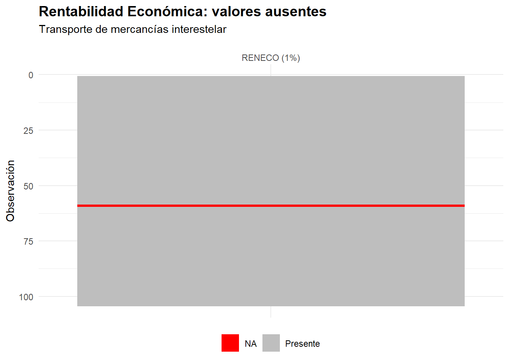
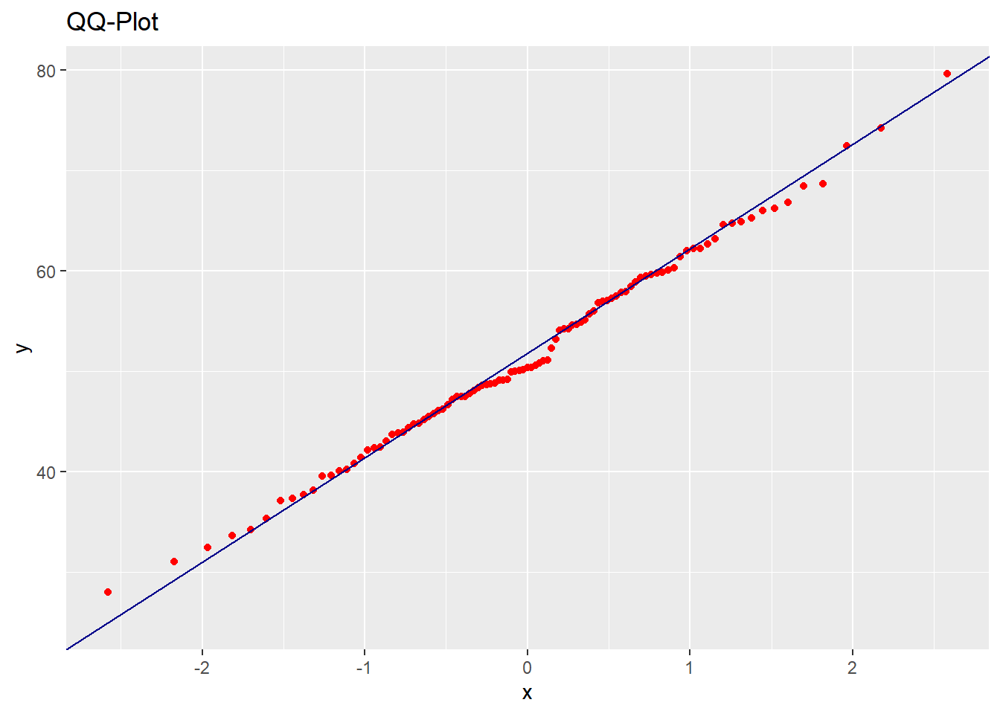
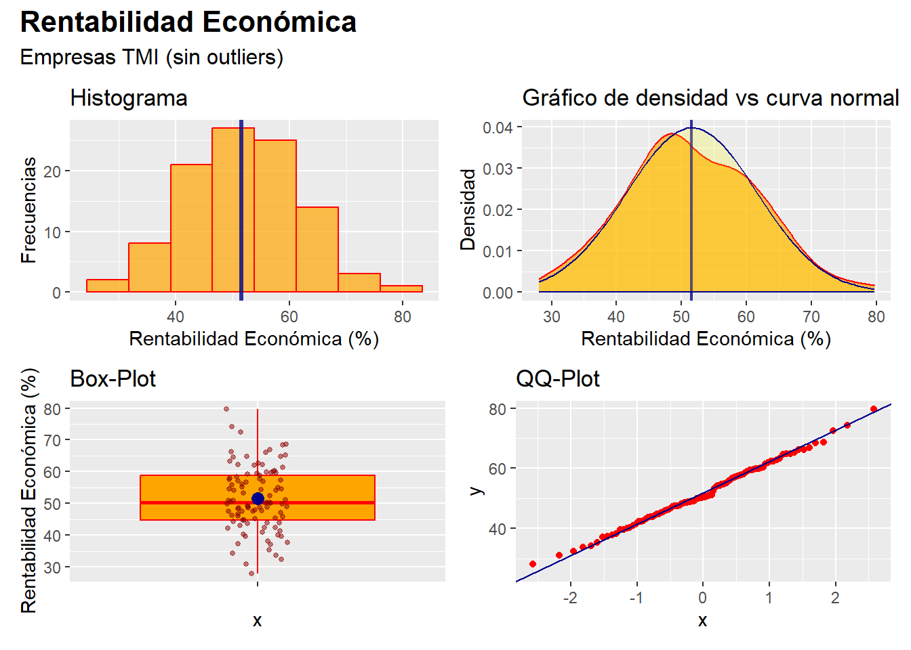
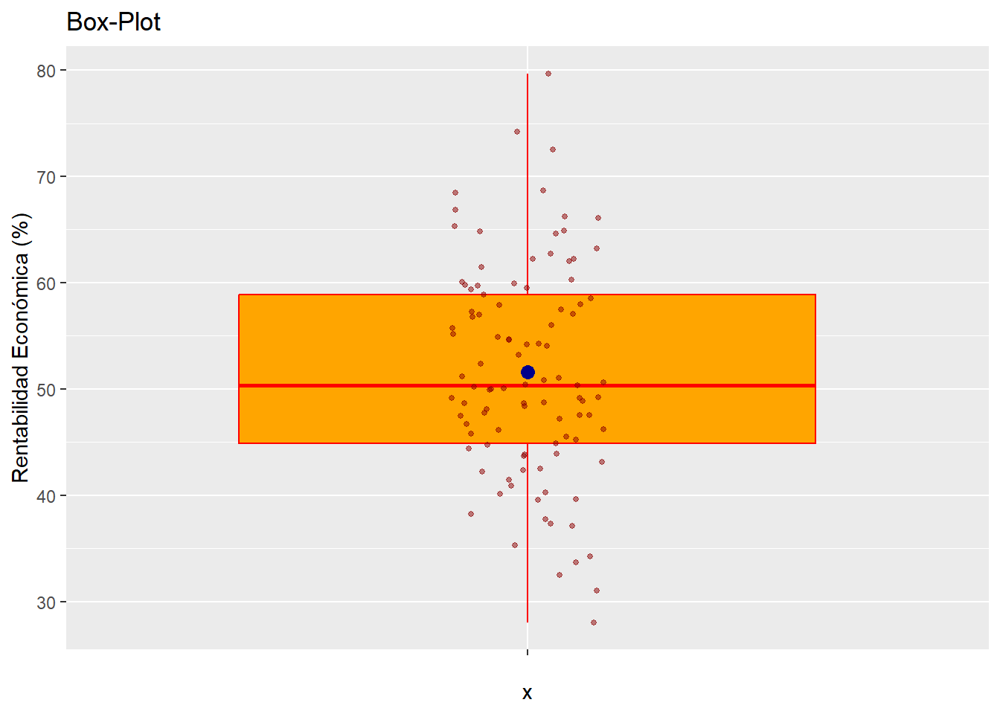
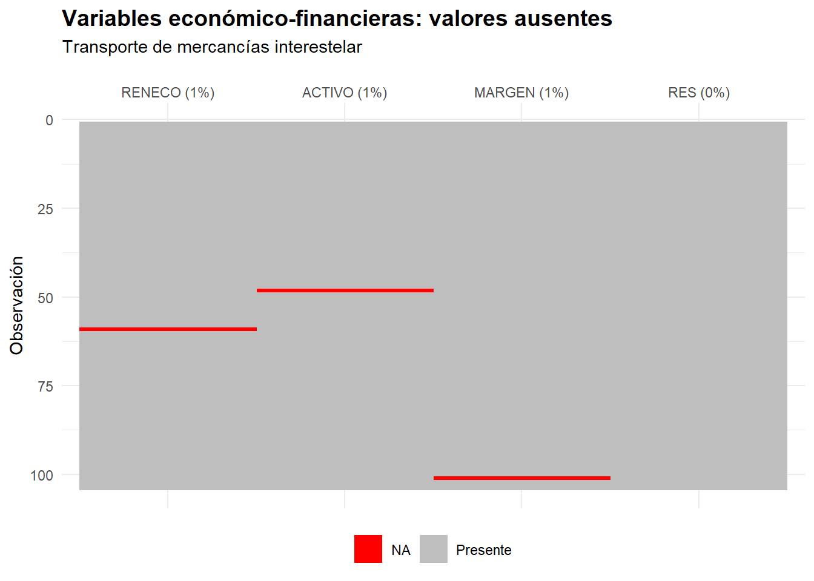
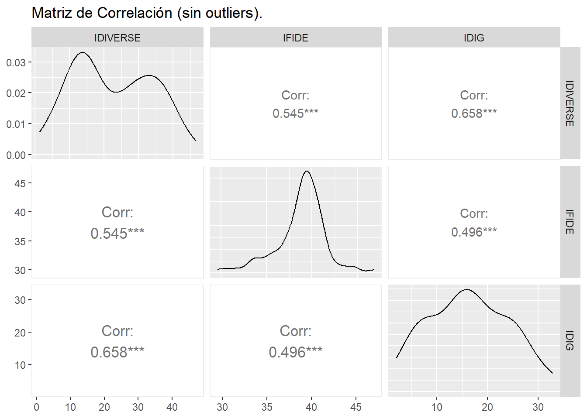
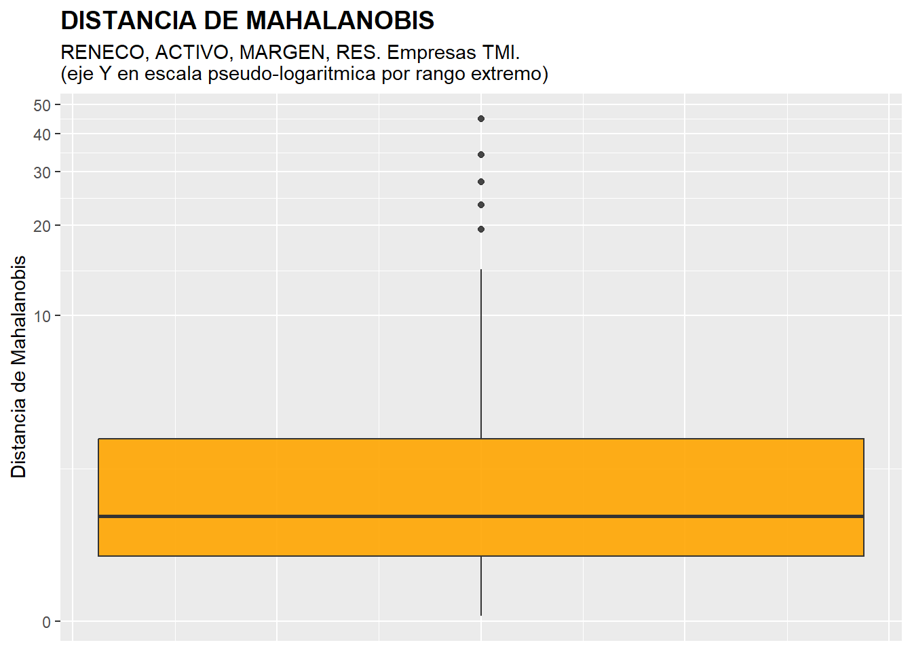
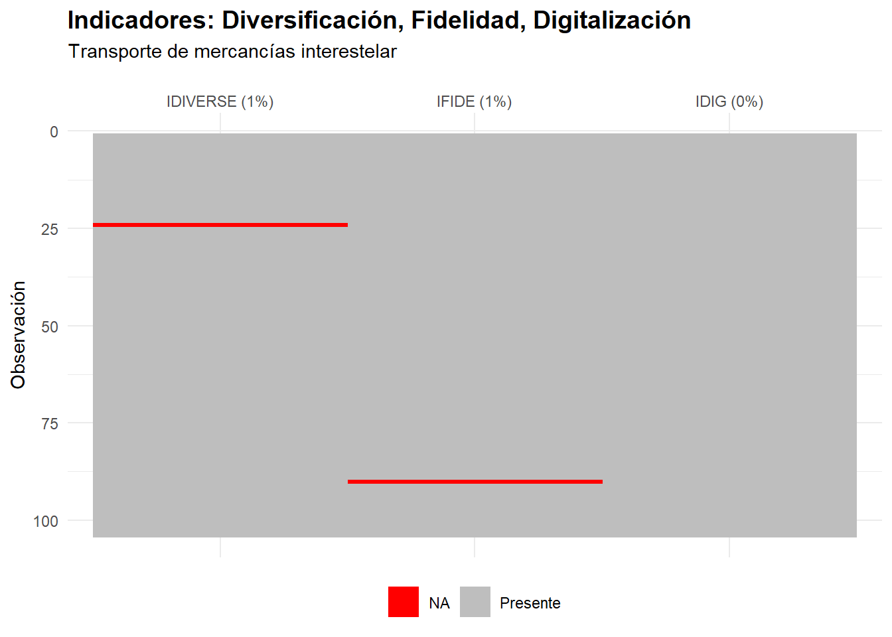
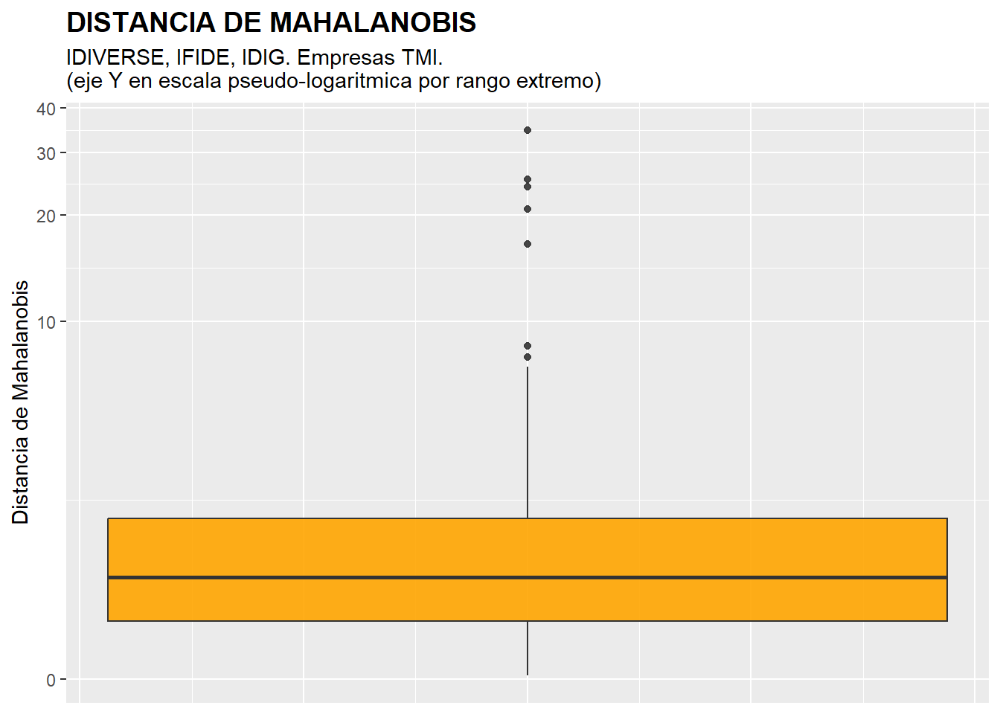

5 Análisis previo de datos.

Figura 5.1. Comandante de Rogue One Freight supervisando los datos de travesía.
5.1 
 Introducción.
Introducción.
Antes de aplicar técnicas complejas que nos permitan extraer conclusiones relevantes, conviene detenerse en unas tareas previas que persiguen dos objetivos:
Preparar nuestros datos para que puedan ser procesados correctamente sin provocar distorsiones en los resultados. En especial, hay dos puntos clave: el tratamiento de los datos faltantes (missing values) y de los casos atípicos o outliers.
Obtener una visión inicial de la información que esconden los datos: las medidas básicas que caracterizan la distribución de frecuencias de cada variable y, cuando manejamos más de una, la relación estadística que existe entre ellas.
Conviene además que esos rasgos iniciales de nuestra muestra o población se presenten de un modo visualmente amigable, claro y conciso. Un buen análisis previo que nadie entiende sirve de bien poco.
A lo largo de esta práctica, y sobre un ejemplo basado en una base de datos de empresas dedicadas al transporte interestelar de mercancías, recorreremos una serie de buenas prácticas y de análisis básicos con los que preparar y explorar cualquier conjunto de datos.
5.2  Encargo de la ARTI: auditoría sectorial.
Encargo de la ARTI: auditoría sectorial.
La Autoridad Reguladora del Transporte Interestelar (ARTI) ha decidido realizar una auditoría de la salud financiera del sector. Su directora, Mara Qyà —conocida en los pasillos de la ARTI como “la mujer que no firma nada sin un p-valor”—, necesita un informe previo antes de que los auditores se desplieguen por las cinco galaxias. Y lo necesita, como siempre, para ayer.
Mara Qyà plantea dos preguntas concretas:
¿Es la rentabilidad económica del sector razonablemente homogénea, o hay empresas con comportamientos anómalos que merezcan una inspección particular? → Para responder, analizaremos la variable RENECO (rentabilidad económica) de forma univariante.
¿Cómo se relacionan entre sí los principales indicadores financieros —rentabilidad, tamaño, margen y resultado—, y hay empresas que destaquen como atípicas cuando se examinan todas estas dimensiones a la vez? → Para ello, ampliaremos el análisis a cuatro variables: RENECO, ACTIVO, MARGEN y RES.
Antes de responder, Mara Qyà exige que los datos estén depurados: sin valores faltantes que distorsionen los resultados y con una decisión razonada sobre los posibles outliers. Quiere, además, gráficos claros y medidas concretas. Manos a la obra.
Supongamos que trabajamos dentro del proyecto “explora” que creamos anteriormente. En su carpeta guardaremos el script “previo_rstars.R” y el archivo de Microsoft® Excel® “interestelar_100.xlsx”, cuyos enlaces de descarga figuran en la sección final del capítulo.
Si abrimos “interestelar_100.xlsx”, comprobaremos que consta de tres hojas: la primera recoge un aviso sobre el uso exclusivo que debe darse a los datos; la segunda describe las variables consideradas; y la tercera (hoja “Datos”) contiene la información que vamos a importar desde RStudio. Se trata de variables económico-financieras y de otra índole, referidas a una muestra de empresas dedicadas al transporte interestelar de mercancías.
Merece la pena fijarse en un detalle: la hoja de cálculo contiene variables con datos faltantes (missing values). Unos se reconocen por la presencia de celdas en blanco, pero otros aparecen como celdas con el texto “n.d.” (no disponible). Identificar cómo se anota cada ausencia resulta clave, porque tendremos que añadir código adicional a la instrucción de importación para que R los registre correctamente como NAs (not available).
Cerremos el archivo “interestelar_100.xlsx” y volvamos a RStudio para abrir el script “previo_rstars.R” con File → Open File… (o haciendo clic sobre él en la ventana inferior derecha, pestaña “Files”). Este script contiene el código que iremos ejecutando a lo largo de la práctica.
Su primera instrucción es:
## Tratamiento y análisis previo de datos.
# Limpiando el Global Environment
rm(list = ls())Esta instrucción persigue limpiar el Global Environment (la memoria) de los objetos que hayan quedado de sesiones de trabajo anteriores.
A continuación, si preferimos despreocuparnos más adelante de la carga de los paquetes que necesitaremos, podemos activarlos todos de una vez:
# Cargando paquetes
library (readxl)
library (gtExtras)
library (dplyr)
library (visdat)
library (ggplot2)
library (knitr)
library (kableExtra)
library (moments) # paquete necesario para calcular la curtosis.
library (patchwork)
library (GGally)De este modo, solo quedará pendiente por activar el paquete “propio” MATrstars, del que hablaremos más adelante.
Para importar los datos alojados en la hoja “Datos” del archivo de Microsoft® Excel® y echar un primer vistazo a las variables que contiene, ejecutaremos:
## DATOS
# Importando datos desde Excel
interestelar_100 <- read_excel("interestelar_100.xlsx",
sheet = "Datos",
na = c("n.d."))
interestelar_100 <- data.frame(interestelar_100, row.names = 1)
# visualizando el data frame de modo elegante con {gtExtras}
datos_df_graph <- gt_plt_summary(interestelar_100)
datos_df_graphR interpreta por defecto como NAs las celdas vacías de la hoja de cálculo, pero, como acabamos de ver, esa no es la única manera de señalar una ausencia. De ahí que hayamos añadido a read_excel() el argumento na =, que recoge los contenidos de celda que deben traducirse como dato faltante.
Por otro lado, R ha interpretado la primera columna como una variable categórica cuando, en realidad, no es una variable, sino el nombre de cada caso u observación. Para evitarlo, hemos redefinido el data frame indicándole que tome esa columna como los nombres de las filas.
| interestelar_100 | ||||||
| 104 rows x 28 cols | ||||||
| Column | Plot Overview | Missing | Mean | Median | SD | |
|---|---|---|---|---|---|---|
SEDEKobol, Tierra, Arrakis, Fhloston Paradise, Naboo, Tatooine, Coruscant, Miranda, Mül, Pandora, Dagobah, Mann, Romulus, Endor, Klendathu, La Tierra (Final), Miller, Mustafar, Planet P, Qo'noS, Hoth, Júpiter, Vulcano, Zegema Beach, Caprica, LV-223, LV-426, Nueva Caprica and Risa |
0.0% | — | — | — | ||
GALAXIAGalaxia de Andrómeda, Gran Nube de Magallanes, Vía Láctea, Pequeña Nube de Magallanes and Galaxia del Triángulo |
0.0% | — | — | — | ||
| ACTIVO | 1.0% | 260.0 | 159.1 | 445.2 | ||
| FPIOS | 0.0% | 115.6 | 59.8 | 209.3 | ||
| ING | 0.0% | 238.2 | 103.9 | 370.8 | ||
| MARGEN | 1.0% | 60.3 | 56.7 | 16.9 | ||
| RES | 0.0% | 128.2 | 54.6 | 192.4 | ||
| SOLVENCIA | 0.0% | 179.5 | 174.7 | 30.7 | ||
| ACTCOR | 0.0% | 64.6 | 23.6 | 130.4 | ||
| PASCOR | 0.0% | 107.9 | 59.9 | 176.5 | ||
| LIQUIDEZ | 0.0% | 0.7 | 0.7 | 0.2 | ||
| APALANCA | 1.0% | 145.6 | 133.7 | 63.2 | ||
| RENECO | 1.0% | 52.4 | 50.4 | 11.4 | ||
| RENFIN | 0.0% | 121.5 | 119.2 | 32.8 | ||
| EMPLEA | 1.0% | 35.8 | 30.0 | 19.7 | ||
FJURSLG, SAG and CG |
0.0% | — | — | — | ||
| FLOTA | 0.0% | 27.3 | 24.5 | 13.8 | ||
| COSTOP | 1.0% | 110.0 | 29.8 | 192.7 | ||
| CAPEX | 0.0% | 39.4 | 11.2 | 110.5 | ||
| IMD | 0.0% | 16.3 | 4.9 | 26.7 | ||
EFLOANTIGUA, MADURA and RENOVADA |
0.0% | — | — | — | ||
| RUTAS | 0.0% | 397.7 | 327.5 | 376.2 | ||
| IDIG | 0.0% | 18.2 | 16.7 | 10.9 | ||
| IDIVERSE | 1.0% | 23.8 | 22.4 | 13.2 | ||
| IFIDE | 1.0% | 39.4 | 39.2 | 6.2 | ||
| GMEDRUT | 1.0% | 0.3 | 0.2 | 0.3 | ||
| DIST | 1.9% | 164.9 | 57.8 | 279.4 | ||
| BMAL | 1.9% | 8,292.1 | 1,285.6 | 33,732.4 | ||
Tabla 5.1
La “tabla” de variables resultante nos confirma que 24 de ellas son métricas y 4, categóricas.
5.3 Análisis de una variable.
5.3.1  Buscando missing values y outliers.
Buscando missing values y outliers.
Centrémonos en la Rentabilidad Económica (RENECO), la variable que nos permitirá responder a la primera pregunta de Mara Qyà. Como toda buena práctica aconseja, trabajaremos sobre una copia del data frame original para preservar su integridad:
# Copia de df
muestra <- interestelar_100Lo primero es comprobar que todas las empresas tienen su correspondiente valor de RENECO, es decir, que no existen valores perdidos o missing values.
Para hacernos una idea general recurriremos a la función vis_miss() del paquete {visdat}, que localiza gráficamente los missing values de cada variable y calcula qué porcentaje representan sobre el total de observaciones. Como aquí solo nos interesa RENECO, acotaremos antes el data frame con la función select() del paquete dplyr:
## Analisis de una variable.
# Localizando missing values.
muestra %>%
select (RENECO) %>%
vis_miss() +
labs(title = "Rentabilidad Económica: valores ausentes",
subtitle = "Transporte de mercancías interestelar",
y = "Observación",
fill = NULL) +
scale_fill_manual(
values = c("TRUE" = "red", "FALSE" = "grey"),
labels = c("TRUE" = "NA", "FALSE" = "Presente")) +
theme(
plot.title = element_text(face = "bold", size = 14),
axis.text.x = element_text(margin = margin(t = -20)))
Figura 5.2
La explicación detallada del código es la siguiente:
muestra %>%: el pipe de dplyr encadena las operaciones de forma legible.select(RENECO): nos quedamos únicamente con la columnaRENECO, de modo que el gráfico se centre en esa variable y muestre una sola columna.-
vis_miss(): función del paquete{visdat}que dibuja un mapa de celdas Present/Missing:Eje Y = observaciones (filas del data frame).
Eje X = variables (aquí, solo
RENECO).Cada celda indica si el valor está presente o es NA.
-
labs(...):titleysubtitle: títulos del gráfico.y = "Observación": etiqueta del eje Y.fill = NULL: suprime el título de la leyenda, que por defecto mostraría una etiqueta poco informativa.
-
scale_fill_manual(...): personaliza los colores y las etiquetas de la leyenda:values = c("TRUE" = "red", "FALSE" = "grey"): internamente,vis_miss()codifica conTRUEla ausencia de dato y conFALSEsu presencia. Aquí pedimos rojo paraTRUEy gris paraFALSE.labels = c("TRUE" = "NA", "FALSE" = "Presente"): sustituye el texto de la leyenda, de modo que en lugar deTRUE/FALSEleamos NA/Presente.
theme(plot.title = element_text(face = "bold", size = 14)): pone el título en negrita y a tamaño 14.
El gráfico revela que, en RENECO, aproximadamente un 1% de los casos carece de dato, es decir, uno de los 104. Para saber de cuál se trata recurriremos de nuevo a dplyr, filtrando las empresas que no tienen valor en esa variable:
La función is.na() responde, caso por caso, a una pregunta muy simple: ¿falta el dato de esta variable en esta fila? El filtro devuelve una única empresa, en la que efectivamente no consta valor alguno de RENECO:
## RENECO
## photon pack freight NAComprobamos que la empresa sin valor en RENECO es Photon Pack Freight.
Ante la existencia de missing values, se puede actuar de varios modos. La decisión no es trivial y depende de la proporción de datos faltantes, de si su ausencia es aleatoria o sistemática, y del tipo de análisis posterior. Las principales estrategias son:
Eliminación del caso (listwise deletion): se descartan las observaciones con algún valor faltante. Es la opción más sencilla, pero implica perder información. Si los datos no faltan de forma completamente aleatoria (MCAR, Missing Completely At Random), la eliminación puede introducir sesgos en los resultados.
Imputación por media o mediana: se sustituye el valor faltante por la media (o la mediana) de la variable. Conserva el tamaño muestral, pero subestima la variabilidad real y puede distorsionar las relaciones entre variables.
Imputación múltiple (paquete mice en R): genera varios conjuntos de datos completos con valores simulados, analiza cada uno por separado y combina los resultados. Es el enfoque de referencia en investigación, ya que refleja la incertidumbre asociada a la imputación.
Imputación por k-vecinos más próximos (función
kNN()del paquete VIM): estima el valor faltante a partir de los casos más parecidos en las demás variables. Intuitivo y eficaz cuando las variables están relacionadas entre sí.
En nuestro ejemplo, dado que los missing values representan un porcentaje muy reducido respecto al total (apenas 1 caso de 104 para RENECO), optaremos por la eliminación del caso, que es la vía más directa y no introduce distorsión apreciable en este contexto. En situaciones con mayor proporción de datos faltantes, o cuando se sospeche que la ausencia no es aleatoria, convendría considerar las técnicas de imputación mencionadas. Esta eliminación de casos se podrá realizar mediante el código:
El operador ! significa “no”, de manera que !is.na(RENECO) se lee como “que RENECO no sea un dato faltante”.
En el Global Environment podemos comprobar que el data frame “muestra” tiene ahora un caso menos: 103.
Detengámonos un momento en lo que acabamos de hacer. La detección y eliminación de missing values exige una secuencia recurrente de instrucciones: una llamada a vis_miss() acompañada de labs(), scale_fill_manual() y theme() para el gráfico; un filter(is.na(...)) para listar los casos afectados; y un filter(!is.na(...)) para descartarlos. Ese mismo bloque, con variaciones mínimas, reaparecerá cada vez que abordemos esta tarea, tanto en lo que resta de capítulo como en los siguientes.
El gráfico de vis_miss() arrastra además un pequeño defecto estético cuando analizamos pocas variables: los nombres aparecen, por defecto, muy despegados del panel superior. Para aligerar los scripts del libro sin renunciar a la uniformidad de la presentación —y, de paso, corregir ese detalle—, el paquete MATrstars incorpora la función auxiliar explora_na(), que encapsula todo el bloque anterior (gráfico, listado de NAs y eliminación opcional), coloca correctamente los nombres de variable y presenta la tabla de casos afectados con el estilo tipográfico habitual del libro, mediante kable_rstars().
De este modo, todo el bloque de código anterior podría haberse escrito de forma mucho más compacta como:
muestra <- explora_na(
muestra,
variables = RENECO,
accion = "eliminar",
titulo = "Rentabilidad Económica: valores ausentes",
subtitulo = "Transporte de mercancías interestelar"
)Como a estas alturas ya hemos eliminado de “muestra” el caso con NA, comprobaremos el funcionamiento de la función sobre una copia limpia del data frame original que contenga solo la variable RENECO; la llamaremos “muestra_demo”. El resultado coincidirá con el del bloque manual, pero presentado con las mejoras comentadas:
muestra_demo <- select(interestelar_100, RENECO)
muestra_demo <- explora_na(
muestra_demo,
variables = RENECO,
accion = "eliminar",
titulo = "Rentabilidad Económica: valores ausentes",
subtitulo = "Transporte de mercancías interestelar"
)
rm(muestra_demo)Figura 5.3
| RENECO | |
|---|---|
| photon pack freight | NA |
Tabla 5.2
A partir de aquí, y en los capítulos siguientes, el tratamiento de missing values se realizará con explora_na(). La ficha completa de la función —argumentos, valores por defecto, ejemplos de uso y enlace al código fuente en GitHub— puede consultarse en el Apéndice: Funciones auxiliares del paquete MATrstars al final del libro.
Resueltos los valores perdidos, conviene rastrear la posible presencia de outliers o casos atípicos, capaces de desvirtuar los resultados de ciertos análisis. Como trabajamos con una sola variable métrica, la rentabilidad económica, nos basta con representarla mediante un box-plot o gráfico de caja. Recurriremos para ello a la gramática de ggplot2:
## Localizando outliers
ggplot(data = muestra, aes(y = RENECO)) +
geom_boxplot(fill = "orange") +
ggtitle("Rentabilidad Económica",
subtitle = "Empresas de transporte interestelar") +
ylab("Rentabilidad Económica (%)") +
theme(plot.title = element_text(face = "bold", size = 14))Obteniéndose el gráfico:

Figura 5.4
Recordemos brevemente cómo se lee este gráfico, que ya conocemos del capítulo 4. La “caja” alberga el 50% central de los casos, los comprendidos entre el primer y el tercer cuartil, cuya diferencia es el rango intercuartílico; la línea horizontal que la atraviesa es la mediana. De la caja salen dos segmentos o “bigotes”: el superior alcanza el mayor valor que no llega a considerarse atípico y el inferior, el menor. Los casos atípicos u outliers son precisamente los que quedan más allá, a más de 1,5 veces el rango intercuartílico por encima del tercer cuartil o por debajo del primero, y se dibujan como puntos sueltos.
En nuestro caso, el box-plot delata dos empresas atípicas. Para identificarlas recurriremos de nuevo a dplyr y estableceremos un filtro:
# Mostrar casos concretos de outliers
Q1 <- quantile (muestra$RENECO, c(0.25))
Q3 <- quantile (muestra$RENECO, c(0.75))
muestra %>%
filter(RENECO > Q3 + 1.5*IQR(RENECO) |
RENECO < Q1 - 1.5*IQR(RENECO)) %>%
select(RENECO)Las dos primeras líneas calculan el primer cuartil (Q1) y el tercero (Q3) con la función quantile(), a la que se pasa como segundo argumento la proporción de casos que deben quedar por debajo del cuantil buscado: 0.25 para el primer cuartil, puesto que deja por debajo al 25% de empresas con menor rentabilidad. Después, filter() retiene los outliers, definidos como los casos cuyo RENECO supera a Q3 más 1,5 veces el rango intercuartílico, o bien no alcanza a Q1 menos esa misma cantidad; el rango intercuartílico lo proporciona la función IQR(). Por último, select() muestra el resultado en la consola:
## RENECO
## jovian logistics 93.84748
## sandworm freight 89.40171Los casos atípicos o outliers en la variable RENECO son Jovian Logistics y Sandworm Freight.
Como ocurría con los missing values, el tratamiento de los outliers depende de la información que se tenga, y del enfoque que se quiera seguir en la aplicación de las diferentes técnicas. Es un tema que a veces resulta complejo, y que no está exento de divergencias en la opinión de los investigadores. Las principales alternativas son:
Eliminar el caso: adecuado cuando son pocos, representan una proporción reducida de la muestra y se sospecha que el valor extremo obedece a un error de medida o de registro. Es la opción que adoptaremos en este libro.
Winsorizar: sustituir los valores extremos por el del percentil 5 (o el 95), o por el límite del bigote del box-plot. El caso se conserva, pero su influencia queda acotada.
Mantener y documentar: a veces el outlier es un dato real y relevante (una empresa genuinamente excepcional). Eliminarlo supondría perder información legítima. En estos casos, conviene reportar los resultados con y sin outliers para valorar su impacto.
Usar técnicas estadísticas robustas: muchos métodos disponen de versiones diseñadas para mitigar el efecto de valores extremos sin necesidad de eliminarlos. Algunos ejemplos concretos: la mediana en lugar de la media como medida de posición central; la MAD (Median Absolute Deviation) en lugar de la desviación típica como medida de dispersión; la regresión robusta (función
rlm()del paquete{MASS}) en lugar de la regresión lineal ordinaria (lm()); o la correlación de Spearman en lugar de la de Pearson, que es menos sensible a valores extremos.
La decisión depende en última instancia del contexto del análisis. Al final de este capítulo veremos, precisamente, cómo la presencia o ausencia de outliers puede alterar las correlaciones entre variables, lo que subraya la importancia de esta decisión.
En nuestro ejemplo, dado que los outliers son solo dos y apenas representan una fracción de la muestra, prescindiremos de esas dos empresas de comportamiento atípico para que no distorsionen los resultados de las técnicas que apliquemos después, como un ANOVA o un análisis de regresión. Bastará con crear a partir de “muestra” un nuevo data frame sin esos dos casos, al que llamaremos “muestra_so”:
# Eliminar outliers
muestra_so <- muestra %>%
filter(RENECO <= Q3 + 1.5*IQR(RENECO) &
RENECO >= Q1 - 1.5*IQR(RENECO))Conviene reparar en que, dentro de filter(), ahora pedimos justo lo contrario que antes: por eso hay que invertir el sentido de las desigualdades y sustituir el operador “|” por “&”. En el Global Environment comprobamos que “muestra_so” conserva las mismas variables que “muestra”, pero con dos casos menos: 101.
Como sucedía con los missing values, este procedimiento reaparecerá una y otra vez en los capítulos siguientes: un box-plot con ggplot(), el cálculo de Q1 y Q3 con quantile(), un filter() para listar los casos y otro para eliminarlos. Para aligerar el código, el paquete MATrstars incluye la función auxiliar explora_outliers(), que reúne todo ese bloque en una sola llamada y presenta la tabla de casos afectados con el estilo tipográfico habitual del libro, mediante kable_rstars().
Además, la función incorpora una mejora visual importante: cuando los outliers son tan extremos que “aplastan” la caja del box-plot hasta hacerla ilegible, explora_outliers() activa automáticamente una escala pseudologarítmica en el eje Y. Esta transformación (pseudo_log en ggplot2, activable manualmente con scale_y_continuous(trans = "pseudo_log")) comprime los valores grandes sin alterar los pequeños, y a diferencia del logaritmo puro, admite valores cero y negativos. La función detecta cuándo es necesario aplicarla comparando el rango de los datos con el rango intercuartílico: si la diferencia es muy acusada, aplica la transformación automáticamente; en caso contrario, mantiene la escala lineal habitual.
De este modo, todo el bloque de código anterior podría haberse escrito de forma mucho más compacta como:
muestra_so <- explora_outliers(
muestra,
variables = RENECO,
accion = "eliminar",
titulo = "Rentabilidad Económica",
subtitulo = "Empresas de transporte interestelar"
)Como “muestra_so” ya viene depurada, volveremos a apoyarnos en una copia limpia del data frame original con la sola variable RENECO, de nuevo bajo el nombre “muestra_demo”. Aplicamos primero explora_na() para descartar los NAs y después explora_outliers(). El resultado coincidirá con el del bloque manual, ahora con las mejoras comentadas:
muestra_demo <- select(interestelar_100, RENECO)
muestra_demo <- explora_na(muestra_demo, RENECO, accion = "eliminar")
muestra_demo <- explora_outliers(
muestra_demo,
variables = RENECO,
accion = "eliminar",
titulo = "Rentabilidad Económica",
subtitulo = "Empresas de transporte interestelar"
)
rm(muestra_demo)
Figura 5.5
| RENECO | |
|---|---|
| sandworm freight | 89.40171 |
| jovian logistics | 93.84748 |
Tabla 5.3
Más adelante, tras trabajar con varias variables simultáneamente, veremos cómo esta misma función explora_outliers() se aplica también al caso multivariante, calculando internamente la distancia de Mahalanobis. En los capítulos que siguen, la detección y eliminación de outliers se realizará con explora_outliers(), cuya ficha completa —argumentos, valores por defecto y enlace al código fuente en GitHub— puede consultarse en el Apéndice: Funciones auxiliares del paquete MATrstars al final del libro.
5.3.2 Descripción de una variable.
Con la base de datos ya depurada de missing values y outliers, y antes de aplicar la técnica que corresponda a los objetivos del estudio, se acostumbra a presentar una batería de gráficos básicos y medidas descriptivas que ofrecen una idea inicial de la estructura del sector en la variable analizada. Hablamos de medidas y gráficos de posición, de dispersión y de forma, esto es, de asimetría y curtosis.
Conviene abrir ese recorrido con una tabla que recoja la distribución de frecuencias de la variable. Cuando los casos son numerosos —101 en nuestro ejemplo—, lo razonable es agruparlos en intervalos, tal como aprendimos en el capítulo 4. Aquí construiremos la tabla con kable_rstars(), la función de presentación tabular del paquete MATrstars, de la que hablaremos enseguida:
# Tabla de datos (distribución de frecuencias agrupadas en intervalos)
muestra_so <- muestra_so %>% arrange(RENECO, row.names(muestra_so))
k <- nclass.Sturges(muestra_so$RENECO)
muestra_so$intervalos <- cut(muestra_so$RENECO, breaks = k, include.lowest = TRUE)
# Contar frecuencias y construir data frame
conteo_intervalos_df <- as.data.frame(table(muestra_so$intervalos))
colnames(conteo_intervalos_df) <- c("Intervalo", "Frecuencia")
N_agre <- sum(conteo_intervalos_df$Frecuencia)
conteo_intervalos_df$Frecuencia_acum <- cumsum(conteo_intervalos_df$Frecuencia)
conteo_intervalos_df$Frecuencia_R <- conteo_intervalos_df$Frecuencia / N_agre
conteo_intervalos_df$Frecuencia_R_acum <- cumsum(conteo_intervalos_df$Frecuencia_R)
# Mostrar con kable_rstars()
conteo_intervalos_df %>%
kable_rstars(
col.names = c("Intervalo", "n(i)", "N(i)", "f(i)", "F(i)"),
digits = c(NA, 0, 0, 2, 2))| Intervalo | n(i) | N(i) | f(i) | F(i) |
|---|---|---|---|---|
| [28,34.5] | 5 | 5 | 0.05 | 0.05 |
| (34.5,41] | 10 | 15 | 0.10 | 0.15 |
| (41,47.4] | 18 | 33 | 0.18 | 0.33 |
| (47.4,53.9] | 25 | 58 | 0.25 | 0.57 |
| (53.9,60.3] | 25 | 83 | 0.25 | 0.82 |
| (60.3,66.8] | 12 | 95 | 0.12 | 0.94 |
| (66.8,73.2] | 4 | 99 | 0.04 | 0.98 |
| (73.2,79.7] | 2 | 101 | 0.02 | 1.00 |
Tabla 5.4. Dist. frecuencias agrupadas: Rentabilidad Económica
La función kable_rstars() pertenece a MATrstars, un pequeño paquete propio que reúne las funciones auxiliares empleadas a lo largo del libro. No está alojado en CRAN, sino en GitHub (https://github.com/teckel71/MATrstars), y se instala de forma automática la primera vez que se ejecuta el bloque siguiente:
# Paquete MATrstars: funciones auxiliares del libro R-Stars.
if (!requireNamespace("MATrstars", quietly = TRUE)) {
if (!requireNamespace("remotes", quietly = TRUE)) install.packages("remotes")
remotes::install_github("teckel71/MATrstars")
}
library(MATrstars)kable_rstars() es un envoltorio de kable() y kable_styling() que aplica automáticamente los ajustes tipográficos habituales del libro: encabezado en negrita centrado, filas alternas rayadas, bordes discretos, cuerpo centrado, fuente de 11 puntos, punto como separador decimal y notación científica desactivada. El usuario solo indica lo específico de cada tabla (caption, col.names, digits); el resto está preconfigurado.
A partir de aquí, la práctica totalidad de las tablas del libro se generarán con kable_rstars(). La ficha completa puede consultarse en el Apéndice: Funciones auxiliares del paquete MATrstars al final del libro.
La lectura de la tabla es clara: la rentabilidad económica de estas empresas se concentra en valores medios-altos, en torno al 50-60%, y son los dos intervalos centrales (47,4-53,9 y 53,9-60,3) los que reúnen la mayor parte de los casos. Alrededor de ocho de cada diez compañías quedan entre el 41% y el 66,8%, lo que apunta a un sector relativamente estable, con resultados parecidos entre sí. Los extremos están poco poblados: apenas un 5% presenta rentabilidades por debajo del 34,5% y solo un 2% supera el 73,2%. En términos económicos, la competencia y la eficiencia operativa parecen empujar a las empresas hacia un rendimiento razonable y sostenido, de modo que tanto el fracaso como el éxito excepcional resultan minoritarios. Primera respuesta parcial para Mara Qyà: el sector exhibe una rentabilidad bastante homogénea, si bien aún debemos confirmar esta impresión con las medidas descriptivas y descartar la presencia de anomalías.
El análisis gráfico, por su parte, ofrece una imagen mucho más intuitiva de cómo se distribuyen nuestros casos en la variable estudiada.
Un gráfico fundamental es el histograma de la variable estudiada. Para ello, utilizaremos la gramática del paquete ggplot2:
## Descriptivos básicos
# Gráficos básicos
g1 <-
ggplot(data = muestra_so, aes(x = RENECO)) +
geom_histogram(bins = k,
colour = "red",
fill = "orange",
alpha = 0.7) +
geom_vline(xintercept = mean(muestra_so$RENECO),
color = "dark blue",
linewidth = 1.2,
alpha = 0.8) +
ggtitle("Histograma")+
xlab("Rentabilidad Económica (%)") +
ylab("Frecuencias")
g1
Figura 5.6
El gráfico muestra con nitidez cómo se reparten las empresas según su rentabilidad económica. La línea vertical azul, incorporada mediante geom_vline(), señala la rentabilidad media. A simple vista, la distribución resulta acampanada y prácticamente simétrica.
Como complemento del histograma podemos dibujar un gráfico de densidad de RENECO, que no es sino una versión “suavizada” de aquel y que representa la distribución de probabilidad empírica de la muestra. Sobre él superpondremos, mediante stat_function() y el argumento fun = dnorm, una curva normal con la misma media y desviación típica que nuestros datos. La comparación entre ambas curvas permite confirmar de un vistazo los rasgos que el histograma solo dejaba intuir, como una ligera asimetría. El código es:
g2 <-
ggplot(data = muestra_so, aes(x = RENECO)) +
geom_density(colour = "red",
fill = "orange",
alpha = 0.7) +
geom_vline(xintercept = mean(muestra_so$RENECO),
color = "dark blue",
linewidth = 0.8,
alpha = 0.8) +
stat_function(fun = dnorm, args = list(mean = mean(muestra_so$RENECO),
sd = sd(muestra_so$RENECO)),
geom = "area",
color = "darkblue",
fill = "yellow",
alpha = 0.2) +
ggtitle("Gráfico de densidad vs curva normal")+
xlab("Rentabilidad Económica (%)") +
ylab("Densidad")
g2
Figura 5.7
La curva naranja muestra cómo se distribuye la rentabilidad económica: tiene forma de “campana”, con la mayoría de empresas concentradas alrededor del 50–60%. La línea vertical azul marca el valor central (media), en torno al 52%. Comparada con la curva azul de referencia (la normal), la distribución real es muy parecida, aunque algo más ancha y con un ligero peso extra en rentabilidades algo por debajo del centro; en el extremo alto hay menos casos de lo que predeciría una campana perfecta. En términos económicos: el sector muestra un rendimiento bastante estable y similar entre compañías, con pocas muy rezagadas o extraordinariamente rentables.
Un tercer gráfico útil es el box-plot, construido ya sobre la muestra sin outliers y enriquecido con los valores individuales de cada empresa, que incorporamos con geom_jitter():
g3 <-
ggplot(data = muestra_so, aes(x = "", y = RENECO)) +
geom_boxplot(color = "red",
fill = "orange",
outlier.shape = NA) +
stat_summary(fun = "mean",
geom = "point",
size = 3,
col = "darkblue") +
geom_jitter(width = 0.1,
size = 1,
col = "darkred",
alpha = 0.50) +
ggtitle("Box-Plot") +
ylab("Rentabilidad Económica (%)")
g3
Figura 5.8
El box-plot confirma que la rentabilidad económica se concentra en la zona central. La mediana ronda el 50% —la línea que atraviesa la caja— y la mitad de las empresas se sitúa aproximadamente entre el 46% y el 59%, altura de la caja o rango intercuartílico, lo que denota una variabilidad moderada. El punto azul, que marca la media, queda muy próximo a la mediana, señal de una distribución casi simétrica. Los bigotes se extienden hasta valores en torno al 28% y al 80%, y ya no aparece ningún caso atípico, puesto que los dos detectados se eliminaron previamente. La nube de puntos rojos que dibuja geom_jitter() confirma lo esencial: la mayoría de las compañías rinde de forma parecida y estable en el entorno del 50-60%.
Conviene, además, conocer el valor de las principales medidas descriptivas —de posición, dispersión y forma— que caracterizan la distribución. Crearemos para ello un data frame llamado “estadisticos”, que las recogerá todas, aplicando a la variable RENECO de “muestra_so” la función summarise() de dplyr. Calcularemos la media, la desviación típica, el valor mínimo, la mediana, el valor máximo, el coeficiente de asimetría de Fisher y el coeficiente de apuntamiento o curtosis de Fisher. Esta última medida procede de la función kurtosis() del paquete moments, que debemos tener activado. Un matiz importante: esa función sitúa la distribución perfectamente mesocúrtica en el valor 3, de modo que le restaremos 3 para que la referencia vuelva a ser 0, tal como vimos en el capítulo 4. El código es:
# Calcular estadísticos
estadisticos <- muestra_so %>% summarise( Media = mean(RENECO),
DT = sd(RENECO),
Mínimo = min(RENECO),
Mediana = median(RENECO),
Maximo = max(RENECO),
Asimetria = skewness(RENECO),
Curtosis = kurtosis(RENECO) - 3)Volcar todas las medidas en un data frame de un único caso tiene una ventaja evidente: podemos mostrarlas en una tabla elegante generada a partir de él con kable_rstars():
# Mostrar estadisticos
estadisticos %>%
kable_rstars(caption = "Principales Estadísticos de la Rentabilidad Económica",
col.names = c("Media", "Desviación Típica",
"Valor mínimo", "Mediana",
"Valor Máximo", "C. Asimetría Fisher",
"C. Curtosis Fisher"),
digits = c(2, 2, 2, 2, 2, 2, 2))| Media | Desviación Típica | Valor mínimo | Mediana | Valor Máximo | C. Asimetría Fisher | C. Curtosis Fisher |
|---|---|---|---|---|---|---|
| 51.6 | 10.04 | 28.04 | 50.36 | 79.69 | 0.14 | -0.19 |
Tabla 5.5. Principales Estadísticos de la Rentabilidad Económica
El significado de estas medidas quedó explicado en el capítulo 4. En conjunto, cabe afirmar lo siguiente:
La rentabilidad típica del sector está en torno al 51–52% (media ≈ 51,6% y mediana ≈ 50,4%), lo que indica un nivel medio-alto y sin sesgos fuertes.
La variabilidad es moderada (desv. típica ≈ 10 p.p.): la mayoría de empresas se mueve, grosso modo, entre ~42% y ~62%. Es un sector relativamente estable.
La asimetría ligeramente positiva (0,14) sugiere que hay algunas compañías con rentabilidades algo superiores a lo habitual, pero no dominan el panorama.
La curtosis negativa (−0,19, platicúrtica) revela una distribución más “plana” que la normal: menos casos extremos, tanto por arriba como por abajo, y algo menos de concentración en el centro. En términos económicos, existe una diversidad razonable de resultados, pero escasean los fracasos sonados y los éxitos extraordinarios.
Los extremos observados (≈ 28% mínimo y ≈ 80% máximo) existen, pero son minoría.
Conclusión: el negocio de transporte interestelar muestra una rentabilidad sostenida y relativamente homogénea; hay diferencias entre empresas (gestión, escala, rutas, mix tecnológico), pero el riesgo de resultados extremos parece contenido, y los “superéxitos” son poco frecuentes.
5.3.3 Normalidad.
Numerosas técnicas multivariantes de corte inferencial —el análisis de la varianza o la regresión lineal, por citar dos— exigen que las variables sigan una distribución normal. Para comprobarlo disponemos de dos caminos: el análisis gráfico y el análisis formal, este último basado en contrastar la hipótesis nula de normalidad.
Empecemos por el método gráfico más extendido: el gráfico qq o cuantil-cuantil, que enfrenta los cuantiles de nuestra muestra con los de una distribución normal teórica de idéntica media y desviación típica. Si los puntos se alinean sobre la diagonal, asumiremos un comportamiento aproximadamente normal. El código, con las herramientas de ggplot2, es el siguiente:
## Normalidad
# Grafico QQ
g4 <-
ggplot(data = muestra_so, aes(sample = RENECO)) +
stat_qq(colour = "red") +
stat_qq_line(colour = "dark blue") +
ggtitle("QQ-Plot")
g4Y el resultado:

Figura 5.9
No siempre resulta fácil extraer una conclusión firme de un gráfico qq. En nuestro ejemplo, sin embargo, los puntos se ciñen a la diagonal con bastante fidelidad, lo que invita a pensar que RENECO podría seguir una distribución normal.
Si queremos ser más precisos, al análisis gráfico podemos añadir uno formal, apoyado en un contraste de hipótesis. La prueba más habitual es la de normalidad de Shapiro y Wilk, que se comporta bien en muestras relativamente reducidas. Su hipótesis nula es, justamente, el supuesto de normalidad; así que, para una significación del 5%, un p-valor superior a 0,05 nos llevará a no rechazarla. La ejecutamos así:
# Prueba de Shapiro-Wilk
shapiro.test(x = muestra_so$RENECO)El resultado obtenido en la consola es:
##
## Shapiro-Wilk normality test
##
## data: muestra_so$RENECO
## W = 0.9949, p-value = 0.9715El p-valor obtenido supera con holgura el umbral de 0,05, de modo que no se rechaza la hipótesis nula de normalidad: con una significación del 5%, la muestra respalda que RENECO se comporta de forma normal, tal como ya anticipaba el gráfico qq.
5.3.4  Resumen: 4 gráficos básicos en la descripción de una variable.
Resumen: 4 gráficos básicos en la descripción de una variable.
En definitiva, para describir inicialmente la distribución de frecuencias de una variable métrica basta con los cuatro gráficos que acabamos de recorrer. Y como en un informe el espacio siempre escasea, podemos reunirlos en una sola imagen gracias al paquete patchwork, que combina gráficos generados con ggplot2. Crearemos así el objeto “resumen” a partir de “g1”, “g2”, “g3” y “g4”, con una sintaxis de lo más intuitiva: el operador / coloca debajo lo que viene a continuación, mientras que | lo sitúa al lado. Después añadiremos un título y un subtítulo para el conjunto:
## Resumen gráfico
resumen <- (g1 | g2)/(g3 | g4)
resumen <- resumen +
plot_annotation(
title = "Rentabilidad Económica",
subtitle = "Empresas TMI (sin outliers)",
theme = theme(
# TÍTULO de la composición
plot.title = element_text(
size = 16, # tamaño
face = "bold", # negrita
),
# SUBTÍTULO de la composición
plot.subtitle = element_text(
size = 12
)))
resumenFigura 5.10
La composición queda guardada en el Global Environment con el nombre “resumen”. El bloque plot_annotation() es el encargado de definir y dar formato al título y al subtítulo del conjunto.
5.4 Análisis de múltiples variables.
Muchas de las técnicas que se aplican al análisis de datos económicos —el análisis de componentes principales, la regresión o el análisis clúster, entre otras— parten de una distribución de frecuencias multivariante. En este apartado nos ceñiremos a las variables métricas, pues a los atributos, variables categóricas o factores les dedicaremos un capítulo entero.
Pasamos ahora a la segunda pregunta de Mara Qyà: ¿cómo se relacionan entre sí los principales indicadores financieros, y hay empresas que destaquen como atípicas al examinar varias dimensiones a la vez?
Todas ellas reclaman, una vez más, una fase inicial que ponga a punto la base de datos y ofrezca una fotografía de las variables implicadas. Lo aconsejable es aplicar a cada variable por separado algunos de los análisis gráficos que acabamos de ver.
A ese examen individual hay que sumar uno adicional, dirigido a cuantificar el grado de intensidad de la relación estadística entre las variables: el estudio de la correlación. Pero antes debemos detenernos en un problema específico que surge en cuanto manejamos varias variables a la vez: la detección de casos atípicos.
5.4.1 Localización de missing values y outliers.
También aquí el primer paso consiste en localizar los casos con valores perdidos o missing values, para decidir después cómo tratarlos: eliminar el caso, estimar el valor ausente, etc.
Imaginemos un análisis que tenga en cuenta cuatro variables: RENECO (rentabilidad económica), ACTIVO (volumen de activos de la empresa), MARGEN (margen de beneficio) y RES (resultado del ejercicio). Son, precisamente, las cuatro dimensiones por las que pregunta Mara Qyà.
Generaremos primero una copia del data frame original para preservar su integridad, a la que llamaremos “muestra2”. Sobre ella aplicaremos explora_na(), indicando en el argumento variables las cuatro del análisis y accion = "eliminar" para que, además de mostrar el gráfico y la tabla de casos afectados, los descarte del data frame:
options(matrstars.figura_num = "5.11", matrstars.tabla_num = "5.6")
## Trabajando con multiples variables.
# Copia de df original.
muestra2 <- interestelar_100
# Diagnóstico y filtrado de missing values.
muestra2 <- explora_na(
muestra2,
variables = c(RENECO, ACTIVO, MARGEN, RES),
accion = "eliminar",
titulo = "Variables económico-financieras: valores ausentes",
subtitulo = "Transporte de mercancías interestelar"
)
Figura 5.11
| RENECO | ACTIVO | MARGEN | RES | |
|---|---|---|---|---|
| vega transport | 50.42554 | NA | 48.4567 | 104.87 |
| photon pack freight | NA | 57.78 | 48.7883 | 24.36 |
| poe dameron cargo | 54.20692 | 49.68 | NA | 26.93 |
Tabla 5.6
El data frame “muestra2” contiene los mismos datos que “interestelar_100”, salvo los 3 casos con missing values que han sido eliminados (101): Vega Transport, Photon Pack Freight y Poe Dameron Cargo.
En cuanto a la detección de outliers, examinar las variables de una en una resulta poco operativo cuando son numerosas. La alternativa consiste en calcular la distancia de Mahalanobis, que actúa como “resumen” del comportamiento de cada caso en todas las variables consideradas a la vez. Podemos verla como una especie de “z-score multivariante”: mide cuántas desviaciones típicas se aleja una observación del “centro” del conjunto, teniendo en cuenta todas las variables y el modo en que se relacionan entre sí.
Su utilización, intuitivamente, se puede justificar de este modo:
Con una sola variable, el “raro” es el que está a muchos z-scores de la media.
Con varias variables (p. ej., rentabilidad, activo, margen, resultado), el “centro” es el vector de medias y la forma de la nube viene dada por la covarianza (las variables pueden estar en escalas distintas y estar correlacionadas).
-
La distancia de Mahalanobis:
Estandariza las escalas (una variable en millones no pesa más que otra en porcentajes).
Gira y estira el espacio según las correlaciones (si dos variables están muy correlacionadas, moverte a lo largo de su diagonal “cuesta” menos que moverte perpendicularmente).
En 2D lo verías como elipses alrededor del centro (no círculos). Los puntos fuera de la elipse “grande” son potenciales outliers.
La distancia de Mahalanobis de un vector \(\mathbf{x}\in\mathbb{R}^p\) respecto del centro \(\boldsymbol{\mu}\) y la matriz de covarianzas \(\mathbf{\Sigma}\) es:
\[ D_M(\mathbf{x}) = \sqrt{(\mathbf{x}-\boldsymbol{\mu})^{\top}\,\mathbf{\Sigma}^{-1}\,(\mathbf{x}-\boldsymbol{\mu})}. \]
Añadiremos, pues, una columna más al data frame “muestra2” con la distancia de Mahalanobis que corresponde a cada caso en el conjunto de las cuatro variables. La llamaremos MAHALANOBIS. Para calcularla nos valdremos de las funciones mutate() y pick() de dplyr, que alimentan a su vez a la función mahalanobis(), en la que hay que especificar tres elementos:
Las columnas de “muestra2” para las que se van a calcular las distancias.
El vector de medias de las variables para las que se calcula la distancia (argumento
center =).La matriz de varianzas y covarianzas de las variables para las que se calcula la distancia (argumento
cov =).
En definitiva, el código es:
# Identificando y descartando outliers con distancia de Mahalanobis.
muestra2 <- muestra2 %>%
mutate(
MAHALANOBIS = {
X <- pick(RENECO, ACTIVO, MARGEN, RES)
mahalanobis(as.matrix(X),
center = colMeans(X),
cov = cov(X))
}
)Hecho esto, podemos construir el diagrama de caja de MAHALANOBIS igual que haríamos con cualquier otra variable:
ggplot(data = muestra2, aes(y = MAHALANOBIS)) +
geom_boxplot(fill = "orange") +
ggtitle("DISTANCIA DE MAHALANOBIS",
subtitle = "RENECO, ACTIVO, MARGEN, RES. Empresas TMI.") +
ylab("MAHALANOBIS")
Figura 5.12
El gráfico delata varios casos atípicos. Para identificarlos ejecutaremos:
Q1M <- quantile (muestra2$MAHALANOBIS, c(0.25))
Q3M <- quantile (muestra2$MAHALANOBIS, c(0.75))
muestra2 %>%
filter(MAHALANOBIS > Q3M + 1.5*IQR(MAHALANOBIS) |
MAHALANOBIS < Q1M - 1.5*IQR(MAHALANOBIS))%>%
select(MAHALANOBIS, RENECO, ACTIVO, MARGEN, RES) En la consola se obtendrá el listado:
## MAHALANOBIS RENECO ACTIVO
## hyperion star haulage 8.443881 79.68646 211.14
## jovian logistics 19.407213 93.84748 220.56
## sandworm freight 23.338920 89.40171 17.55
## chakotay cargo systems 34.189074 37.09704 2158.69
## moya cargo systems 7.987575 66.05547 520.29
## io star transport 8.143146 34.26908 498.00
## dagobah freightlines 11.049984 66.83549 511.39
## hyperdrive express 27.755438 45.20668 2499.94
## home one cargo 14.276454 53.21612 1145.48
## arrakis freight 44.863023 40.10962 2966.52
##
## MARGEN RES
## hyperion star haulage 41.51348 168.25
## jovian logistics 32.11189 206.99
## sandworm freight 35.12424 15.69
## chakotay cargo systems 44.83819 800.81
## moya cargo systems 63.31031 343.68
## io star transport 17.41820 170.66
## dagobah freightlines 91.97546 341.79
## hyperdrive express 63.19775 1130.14
## home one cargo 48.62131 609.58
## arrakis freight 51.42027 1189.86Si optamos por eliminarlos con vistas al análisis posterior, crearemos un nuevo data frame, “muestra2_so”, mediante el código siguiente:
muestra2_so <- muestra2 %>%
filter(MAHALANOBIS <= Q3M + 1.5*IQR(MAHALANOBIS) &
MAHALANOBIS >= Q1M - 1.5*IQR(MAHALANOBIS)) El data frame “muestra2_so” será una réplica de “muestra2” sin los casos detectados como atípicos: 91 empresas en total.
Como sucedía en el caso univariante, todo este bloque puede sintetizarse con explora_outliers(). Cuando se le pasan varias variables, la función reconoce automáticamente que estamos ante un caso multivariante, calcula por su cuenta la distancia de Mahalanobis y le aplica la regla de 1,5·IQR. Dicho de otro modo, una misma función resuelve ambos escenarios: con una sola variable trabaja directamente sobre ella; con varias, sintetiza su comportamiento mediante Mahalanobis. El bloque manual anterior quedaría así:
muestra2_so <- explora_outliers(
muestra2,
variables = c(RENECO, ACTIVO, MARGEN, RES),
accion = "eliminar",
titulo = "DISTANCIA DE MAHALANOBIS",
subtitulo = "RENECO, ACTIVO, MARGEN, RES. Empresas TMI."
)De nuevo, como “muestra2_so” ya está depurada, comprobaremos el funcionamiento sobre una copia limpia del data frame original que contenga solo las cuatro variables de interés, a la que llamaremos “muestra2_demo”. Aplicamos primero explora_na() para descartar los tres casos con NAs y después explora_outliers() sobre el resultado:
muestra2_demo <- select(interestelar_100, RENECO, ACTIVO, MARGEN, RES)
muestra2_demo <- explora_na(muestra2_demo, accion = "eliminar")
muestra2_demo <- explora_outliers(
muestra2_demo,
variables = c(RENECO, ACTIVO, MARGEN, RES),
accion = "eliminar",
titulo = "DISTANCIA DE MAHALANOBIS",
subtitulo = "RENECO, ACTIVO, MARGEN, RES. Empresas TMI."
)
rm(muestra2_demo)
Figura 5.13
| MAHALANOBIS | RENECO | ACTIVO | MARGEN | RES | |
|---|---|---|---|---|---|
| arrakis freight | 44.863023 | 40.10962 | 2966.52 | 51.42027 | 1189.86 |
| chakotay cargo systems | 34.189074 | 37.09704 | 2158.69 | 44.83819 | 800.81 |
| hyperdrive express | 27.755439 | 45.20669 | 2499.94 | 63.19775 | 1130.14 |
| sandworm freight | 23.338920 | 89.40171 | 17.55 | 35.12424 | 15.69 |
| jovian logistics | 19.407213 | 93.84748 | 220.56 | 32.11189 | 206.99 |
| home one cargo | 14.276454 | 53.21612 | 1145.48 | 48.62131 | 609.58 |
| dagobah freightlines | 11.049984 | 66.83549 | 511.39 | 91.97546 | 341.79 |
| hyperion star haulage | 8.443881 | 79.68646 | 211.14 | 41.51348 | 168.25 |
| io star transport | 8.143146 | 34.26908 | 498.00 | 17.41820 | 170.66 |
| moya cargo systems | 7.987575 | 66.05547 | 520.29 | 63.31031 | 343.68 |
Tabla 5.7
A partir de aquí, y en los capítulos siguientes, la detección y eliminación de outliers se realizará con explora_outliers(), ya sea en el caso univariante o multivariante. La ficha completa de la función —argumentos, valores por defecto, ejemplos de uso y enlace al código fuente en GitHub— puede consultarse en el Apéndice: Funciones auxiliares del paquete MATrstars al final del libro.
5.4.2 Correlación entre variables.
Cuando manejamos más de una variable, un rasgo de primer orden es la intensidad con que esas variables se relacionan estadísticamente entre sí: el estudio de las correlaciones. Una forma rápida y vistosa de visualizar la matriz de correlaciones es la función ggpairs() del paquete GGally. Para aplicarla hemos creado el data frame auxiliar “temporal”, con las variables métricas del estudio, que borramos una vez generado el gráfico:
## Correlaciones entre variables.
temporal <- muestra2_so %>% select(RENECO, ACTIVO, MARGEN, RES)
corr_plot_so <- ggpairs(temporal,
lower = list(continuous = wrap("cor",
size = 4.5,
method = "pearson",
stars = TRUE)),
title = "Matriz de Correlación (sin outliers)")
rm(temporal)
corr_plot_so
Figura 5.14
La interpretación detallada del código es la siguiente:
-
ggpairs(temporal): crea una cuadrícula con una fila y una columna por cada variable del data frame “temporal”.-
Triángulo inferior (
lower): lo personalizamos para que muestre los coeficientes de correlación.
-
Triángulo inferior (
-
lower = list(continuous = wrap("cor", ...))
En las celdas del triángulo inferior, cuando ambas variables son numéricas (“continuous”):"cor": escribe el coeficiente de correlación entre esas dos variables.method = "pearson": usa la correlación de Pearson (relación lineal).size = 4.5: tamaño del número que aparece.stars = TRUE: añade junto al número los asteriscos de significación estadística. La convención habitual es*para p < 0,05,**para p < 0,01 y***para p < 0,001; cuantos más asteriscos, menos probable resulta que la relación observada se deba al azar.
title = "Matriz de Correlación (sin outliers)": título del conjunto.Asignación
corr_plot_so <- ...: guarda la figura en el objetocorr_plot_so. Para verla, basta con escribircorr_plot_soen la consola.
Un coeficiente de correlación se mueve entre -1, que indica una relación intensa en sentido opuesto, y +1, que señala una relación igualmente intensa pero en el mismo sentido. El gráfico muestra que ACTIVO y RES mantienen una relación muy fuerte y positiva, y que entre MARGEN y RENECO existe también un vínculo apreciable. En cambio, ACTIVO y MARGEN, por un lado, y RENECO y ACTIVO, por otro, apenas guardan relación estadística.
Para terminar, comparemos las correlaciones anteriores con las que resultan si mantenemos en la muestra los casos outliers:

Figura 5.15
El contraste es elocuente: la presencia de outliers altera las relaciones entre las variables. La correlación entre ACTIVO y RES se refuerza, mientras que las de RENECO con MARGEN y con RES se debilitan. Todo ello confirma lo que ya apuntábamos: decidir si se trabaja con o sin los casos atípicos es una cuestión tan relevante como delicada.
Conclusión para el informe de Mara Qyà (parte 2): los principales indicadores financieros del sector están moderadamente correlacionados, con una relación especialmente fuerte entre el tamaño (ACTIVO) y el resultado (RES). No obstante, estas correlaciones son sensibles a la presencia de outliers, por lo que cualquier análisis más profundo deberá documentar explícitamente la decisión adoptada al respecto. Mara Qyà ya tiene los elementos clave para su auditoría.
5.5  Materiales para realizar las prácticas del capítulo.
Materiales para realizar las prácticas del capítulo.
En esta sección se recogen los enlaces de acceso a los distintos materiales (scripts, datos…) necesarios para desarrollar los contenidos prácticos del capítulo.
Datos (en formato Microsoft® Excel®):
- interestelar_100.xlsx (obtener aquí)
Scripts:
- previo_rstars.R (obtener aquí)